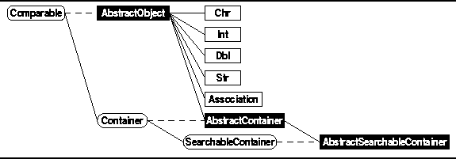

Data Structures and Algorithms
with Object-Oriented Design Patterns in Java
Data Structures and Algorithms
with Object-Oriented Design Patterns in Java
The Java class hierarchy which is used to represent
the basic repertoire of abstract data types is shown
in Figure  .
Two kinds of classes are shown in Figure ;
abstract Java classes ,
which look like this
,
and concrete Java classes ,
which look like this
.
In addition, Java interfaces are shown like this
.
Solid lines in the figure indicate the ``extends'' relation
between classes and between interfaces;
base classes and interfaces always appear to the left
of derived classes and interfaces.
Dashed lines indicates the the ``implements'' relation
between a class and the interface(s) it implements.
.
Two kinds of classes are shown in Figure ;
abstract Java classes ,
which look like this
,
and concrete Java classes ,
which look like this
.
In addition, Java interfaces are shown like this
.
Solid lines in the figure indicate the ``extends'' relation
between classes and between interfaces;
base classes and interfaces always appear to the left
of derived classes and interfaces.
Dashed lines indicates the the ``implements'' relation
between a class and the interface(s) it implements.
Figure: Object class hierarchy.
A Java interface comprises a set of method declarations . An interface does not supply implementations for the methods it declares. In effect, an interface identifies the set of operations provided by every class that implements the interface.
An abstract class in Java is a class which defines only part of an implementation. Consequently, it is not possible create object instances of abstract classes. In Java an abstract class typically contains one or more abstract methods . A abstract method is one for which no implementation is given.
An abstract class is intended to be used a the base class from which other classes are derived . By declaring abstract methods in the base class, it possible to access the implementations provided by the derived classes through the base-class methods. Consequently, we don't need to know how a particular object instance is implemented, nor do we need to know of which derived class it is an instance.
This design pattern uses the idea of polymorphism . Polymorphism literally means ``having many forms.'' The essential idea is that a Java interface is used to define the set of values and the set of operations--the abstract data type. Then, various different implementations (many forms) of the interface can be made. We do this by defining abstract classes that contain shared implementation features and then by deriving concrete classes from the abstract base classes.
The remainder of this section presents the
top levels of the class hierarchy which are shown in Figure .
The top levels define those attributes of objects which
are common to all of the classes in the hierarchy.
The lower levels of the hierarchy
are presented in subsequent chapters where
the abstractions are defined and
various implementations of those abstractions are elaborated.

Figure: Object class hierarchy.
 Copyright © 1998 by Bruno R. Preiss, P.Eng. All rights reserved.
Copyright © 1998 by Bruno R. Preiss, P.Eng. All rights reserved.